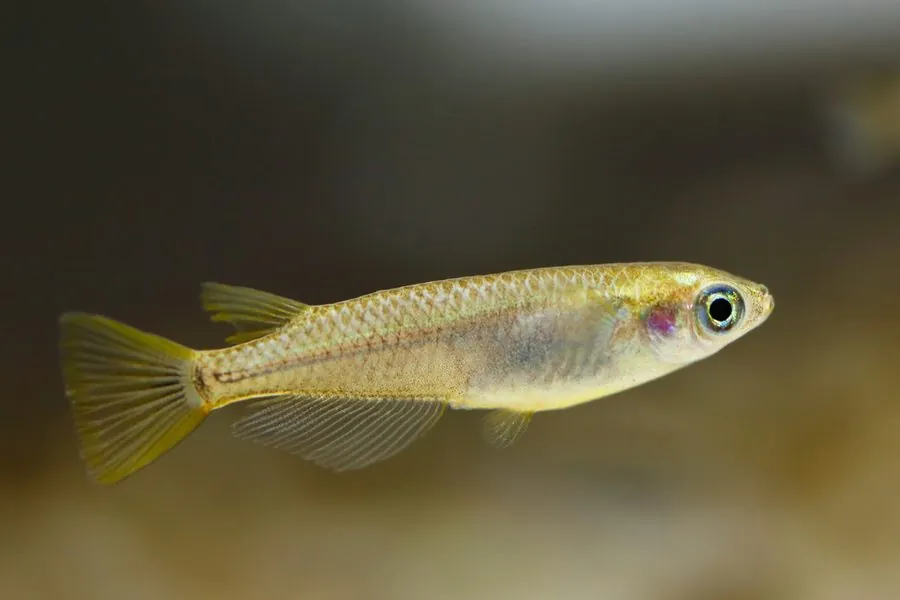

鱼类 · 动物界
青鳉 Oryzias latipes

东亚溪流、稻田和沟渠中的小型鱼，体侧带淡蓝色光泽，是重要的模式生物，也是研究性别决定和环境毒理学的常用实验动物。
- 分类
- 门脊索动物门纲硬骨鱼纲目颌针鱼目科怪颌鳉科属青鳉属
- 栖息环境
- 东亚的淡水溪流、稻田、池塘和沟渠，喜水草较多的静水或缓流浅水
- 地理分布
- 中国、日本和朝鲜半岛的淡水水域，以稻田和沟渠最为常见
- 保护级别
- 暂无评估；中国未列入国家重点保护野生动物名录
物种志
青鳉体细长、侧扁，头稍平，口上位，背鳍靠后，臀鳍较长。成鱼体长一般 3–4 cm，体色淡黄褐或灰绿，体侧在光线下泛出淡蓝或银白色的光泽；雄鱼的背鳍和臀鳍比雌鱼大，边缘常带橙色。
青鳉分布于中国、日本、朝鲜半岛等东亚地区的淡水溪流、稻田、池塘和沟渠，喜欢静水或缓流、水草较多的浅水环境。它是杂食性鱼类，吃浮游动物、藻类、昆虫幼虫和有机碎屑。繁殖期从春季延续到秋季，雌鱼每天可产数粒至数十粒卵，卵带有黏丝，会黏在水草上，几天后孵化出仔鱼。青鳉是遗传学研究的经典模式生物，性别决定机制和体色遗传最早就是在它身上被研究的；它对水质变化敏感，也常被用作检测水体污染的指示生物。在日本的许多地区，野生青鳉数量已明显减少，当地将其列为需要关注的物种。目前它没有IUCN 的正式评估，中国也未将其列入国家重点保护野生动物名录。
形态与习性
- 食性杂食性，吃浮游动物、藻类、昆虫幼虫和有机碎屑
- 体长一般 3–4 cm
- 寿命约 1–2 年
- 繁殖春季至秋季产卵，卵带黏丝黏附在水草上，几天后孵化
- 科研价值经典模式生物，用于研究性别决定、体色遗传和毒理学
- 习性喜群游，常在水面附近活动，对水质变化敏感
趣味知识
- 青鳉是遗传学研究的经典模式生物，性别决定机制最早就是在它身上被研究的。
- 雌鱼产下的卵带有黏丝，会黏在水草上，几天后就孵出仔鱼。
- 青鳉对水质变化敏感，常被用作检测水体污染的指示生物。